Crear por
curiosidad
Me gusta probar ideas y aprender cosas nuevas. Muchas veces lo mejor sale después de equivocarme, ajustar y volver a intentar.

Soy Emily, pero me dicen Mimi. Desde chiquitita andaba con un lápiz en la mano, y hoy diseño productos digitales y estudio Diseño Publicitario. Acá te cuento cómo llegué hasta aquí.
En Navidad eso era lo que siempre me regalaban, junto con hojas de colores y cosas para pintar y dibujar. Todavía no sabía que quería dedicarme a esto; solo me gustaba crear. Cuando empecé a estudiar diseño me di cuenta de que detrás de una pieza bonita también hay una idea, una intención, una estrategia y alguien del otro lado que la tiene que entender.
Y ahí me empezó a interesar
otra cosa: ese alguien. Qué
piensa, qué le cuesta, por qué
hace lo que hace. Por esas
preguntas, casi sin darme
cuenta, terminé en el
mundo del UX/UI.
Ahí encontré cómo juntar lo que me gusta: investigar, preguntar, ordenar un problema y convertirlo en algo que se vea bien y que se use sin esfuerzo. Suelo empezar escuchando y buscando qué se repite en lo que la gente dice y hace; después lo aterrizo con la estrategia, diseño, lo pruebo y lo vuelvo a ajustar. No siempre sale a la primera, y la verdad es que ahí es donde más aprendo.
Después llegó la inteligencia artificial. En vez de preocuparme por lo que podía reemplazar, me puse a ver qué podía aprender con ella: explorar ideas, probar otras formas de trabajar y optimizar mis procesos. Hoy es parte de mi día a día, pero tengo algo claro: no me interesa usar tecnología solo por usarla, sino cuando de verdad le hace la vida más fácil a alguien.
Hoy trabajo como UX/UI Designer, de la mano con front-end, en productos digitales y apps móviles. En Yellowmaps me tocó estar en casi todo: el análisis de competencia, las pruebas de usabilidad, el prototipo y la marca. Mientras tanto, saqué certificaciones en UX/UI Design y Project Management.
Y la publicidad nunca la dejé: me enseñó a pensar qué se dice y cómo se siente. Con El Lagar ganamos Bronce en Effie College y obtuvimos el primer lugar en el Reto Gerencial LATAM, los dos en equipo. Ahí aprendí a decidir en equipo y a sostener una idea, algo que también llevo a cada pantalla.
Me gusta probar ideas y aprender cosas nuevas. Muchas veces lo mejor sale después de equivocarme, ajustar y volver a intentar.
Me fijo en lo que la gente dice, pero también en lo que hace sin darse cuenta. Ahí casi siempre está la pista de lo que hay que diseñar.
Cada herramienta nueva me da ganas de abrirla y ver qué se puede hacer. Me quedo con las que hacen el trabajo más claro, más rápido o más cercano.
Suena a mucho junto, pero
para mí van de la mano.
Lo creativo me da las ideas, la tecnología me ayuda a llevarlas más lejos y lo humano me dice si valen la pena. Al final busco algo sencillo: que se entienda, que conecte y que se sienta.
Si tenés una idea, un problema o simplemente
querés hablar de diseño, escribime. Contame qué
te frena o qué querés lograr y lo pensamos juntos.
Y ahora, ¿qué sigue?
Si buscás a alguien para tu equipo, tenés una app a medio pensar o una marca que todavía no tiene cara, escribime. No hace falta tenerlo todo claro: casi todo lo que he hecho empezó con una conversación y una pregunta. Contame qué tenés en mente y lo vamos armando juntos.
